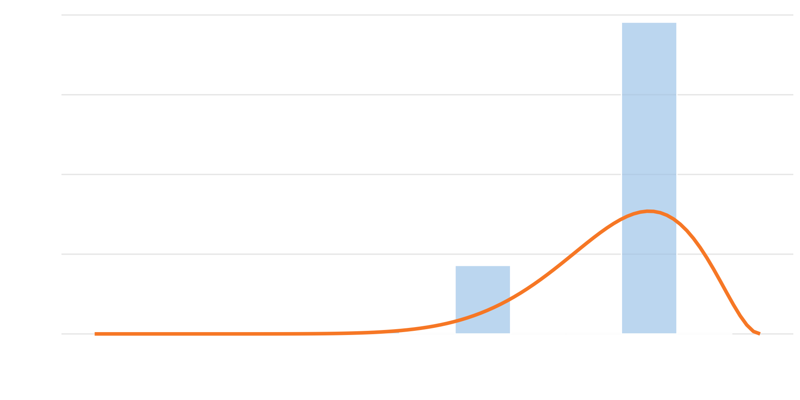
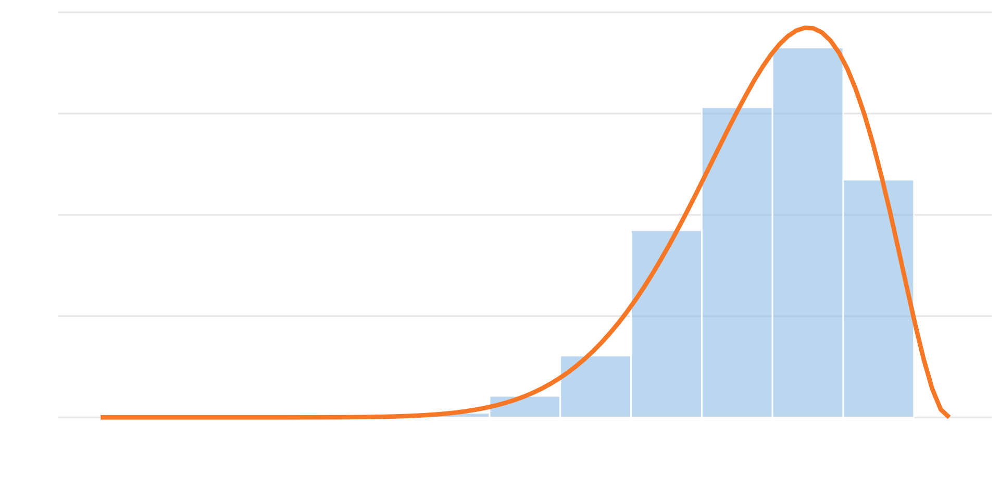
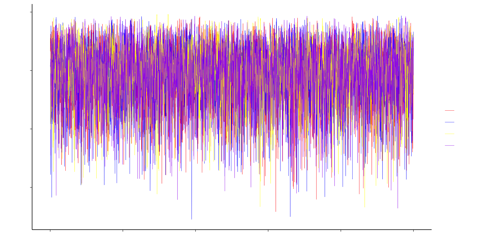

Ethan Marzban
DS Collab, Winter 2024
\[ \newcommand\R{\mathbb{R}} \newcommand{\N}{\mathbb{N}} \newcommand{\E}{\mathbb{E}} \newcommand{\Prob}{\mathbb{P}} \newcommand{\F}{\mathcal{F}} \newcommand{\1}{1\!\!1} \newcommand{\comp}[1]{#1^{\complement}} \newcommand{\Var}{\mathrm{Var}} \newcommand{\SD}{\mathrm{SD}} \newcommand{\vect}[1]{\vec{\boldsymbol{#1}}} \newcommand{\Cov}{\mathrm{Cov}} \usepackage[makeroom]{cancel} \newcommand{\iid}{\stackrel{\mathrm{i.i.d.}}{\sim}} \newcommand{\Lik}{\mathcal{L}} \DeclareMathOperator*{\argmax}{\mathrm{arg max}} \]
Monte Carlo simulation methods
Intro to Bayesian Framework
MCMC
Very brief overview; endless possibilities!
A few prerequisites:
PSTAT 120A (common distributions, random variables, probability spaces)
PSTAT 120B (likelihood-based inference, confidence intervals)
Example Experiment: \(X, Y \iid \mathrm{Unif}\{1, \cdots, 100\}\), and suppose we want to compute \(\Prob(X \leq Y)\).
Let’s do this on the board. (Final answer: 101/200)
We could, however, compute this using a simulation:
Might not seem all that interesting.
But, suppose instead \(X, Y, Z \iid \mathrm{Unif}\{1, \cdots, 100\}\), and suppose we want to compute \(\Prob(X \leq Y \leq Z)\).
Computing this by hand becomes a bit more challenging.
Updating our simulation, though, is easy:
Theorem 1: Monte Carlo, version 1
Let \(A\) be an event with probability of occurrence \(\Prob(A)\). Let \(Y_n\) be defined as the proportion of times the event \(A\) occurs in \(n\) repetitions of the underlying experiment: then \(Y_n\) converges to \(\Prob(A)\) in probability: \[ Y_n \stackrel{p}{\longrightarrow} \Prob(A) \]
Colloquially: proportion of times \(A\) happens in \(n\) repetitions is a good approximation for \(\Prob(A)\), provided \(n\) is large.
Proof is simple; I’ll leave it in an appendix.
Some probabilities can be written as integrals.
Hence, Monte Carlo Simulation can help approximate integrals.
E.g. say we want to compute \[ I_1 := \frac{1}{\sqrt{2\pi}} \int_{0}^{1} e^{-x^2 / 2} \ \mathrm{d}x \]
If \(X \sim \mathcal{N}(0, 1)\), then \(I_1 = \Prob(0 \leq X \leq 1)\).
So, simulate a bunch of \(\mathcal{N}(0, 1)\) draws and compute the proportion that are between 0 and 1.
Monte Carlo, version 2
Consider evaluating the integral \[ I(f) := \int_{0}^{1} f(x) \ \mathrm{d}x \] Let \(X_1, \cdots, X_n\) denote an i.i.d. sample from the \(\mathrm{Unif}[0, 1]\) distribution. Then, \[ \widehat{I}(f) := \frac{1}{n} \sum_{i=1}^{n} f(X_i) \stackrel{p}{\longrightarrow} I(f) \]
General procedure to approximate \(I(f) := \int_{a}^{b} f(x) \ \mathrm{d}x\):
Generate \(X_1, \cdots, X_n \iid \mathrm{Unif}[0, 1]\)
Evaluate \(\widehat{I}(f) := n^{-1} \sum_{i=1}^{n} f(X_i)\)
Example:
For an event \(A\), what does \(\Prob(A)\) represent?
Typical approach (like in 120A): Long-Run Frequency approach, which defines \(\Prob(A)\) to be \[ \lim_{n \to \infty} \left( \frac{\text{\# times $A$ occurs in $n$ repetitions}}{n} \right)\]
Based on the notion of infinite repetitions and frequencies.
Kind of nonsensical!
Example (due to this source): in an upcoming election, a pollster claims that candidate \(A\) has a \(0.9\) chance of winning.
Seems like a reasonable enough statement.
But, from a true frequentist perspective, this cannot be!
Rather, \(\Prob(\text{$A$ wins}) = 0.9\) is a statement about prior beliefs, beliefs we hold prior to starting our experiment.
So, idea: modify our framework to allow to explicit incorporation of prior beliefs, which in turn will allow us to explicitly update our beliefs in the presence of new information.
3 main steps in Bayesian analysis (according to Dr. Andrew Gelman):
Set up a full probability model
Condition on observed data
Evaluate model fit, and adjust/repeat as necessary
Before diving in too deep, let’s recap the frequentist way of thinking; specifically, let’s review likelihood-based methods
Consider frequentist treatment: \(X_1, \cdots, X_n \iid p(x; \theta)\)
Likelihood: given observations \(X_1 = x_1, \ \cdots, X_n = x_n\), how likely are we to observe a value \(\theta_0\) of \(\theta\)?
\(X_1, \cdots, X_n \iid \mathcal{N}(\mu, 1)\).
\(\begin{aligned}[t] \Lik_{\vect{x}}(\mu) & = f_{X_1, \cdots, X_n}(x_1, \cdots, x_n ; \mu) \\ & = \prod_{i=1}^{n} \left[ \frac{1}{\sqrt{2\pi}} \exp\left\{ - \frac{1}{2} (x_i - \mu)^2 \right\} \\ \right] \\ & = \frac{1}{\sqrt{2\pi}} \exp\left\{ -\frac{1}{2} \sum_{i=1}^{n} (x_i - \mu)^2 \right\} \end{aligned}\)
Key point: \(\theta\) is unknown, but assumed to be deterministic.
Bayesian framework, instead, allows for incorporation of prior information by treating \(\theta\) as random, with some prior distribution \(\pi(\theta)\).
Not all that removed from reality!
E.g.: consider counting the number \(N\) of diseased trees in a forest.
Assuming a fixed rate \(\lambda\) of diseased trees per square foot, \(N \sim \mathrm{Pois}(\lambda)\).
But, in reality, rate of diseased trees may vary. Better to instead let the rate \(\Lambda\) vary according to a distribution (e.g. Exponential, etc.)
Notation: \(X \sim \mathrm{Gamma}(\alpha, \beta)\)
PDF: \(f_X(x) = \frac{1}{\Gamma(\alpha) \beta^\alpha} \cdot x^{\alpha - 1} \cdot e^{-x/\beta} \cdot \1_{\{x \geq 0\}}\)
Expectation and Variance: \(\E[X] = \alpha \beta; \quad \Var(X) = \alpha \beta^2\)
MGF: \(M_X(t) = \begin{cases} (1 - \beta t)^{-\alpha} & \text{if } t < 1/\beta \\ \infty & \text{otherwise} \\ \end{cases}\)
CDF: No simple closed-form expression in general.
viewof alpha_2 = Inputs.range(
[0.1, 5],
{value: 1.5, step: 0.1, label: "alpha = "}
)
viewof beta_2 = Inputs.range(
[0.1, 5],
{value: 0.5, step: 0.1, label: "beta = "}
)margin = ({top: 20, right: 30, bottom: 30, left: 40})
height = 400
x_values_2 = d3.scaleLinear()
.domain(d3.extent(data_2, d => d.x))
.range([margin.left, width - margin.right])
y_values_2 = d3.scaleLinear()
.domain([Math.min(d3.min(data_2, d => d.y),0), Math.max(1,d3.max(data_2, d => d.y))]).nice()
.range([height - margin.bottom, margin.top])
line_2 = d3.line()
.x(d => x_values_2(d.x))
.y(d => y_values_2(d.y))
xAxis_2 = g => g
.attr("transform", `translate(0,${height - margin.bottom})`)
.call(d3.axisBottom(x_values_2)
.ticks(width / 80)
.tickSizeOuter(0))
yAxis_2 = g => g
.attr("transform", `translate(${margin.left},0)`)
.call(d3.axisLeft(y_values_2)
.tickValues(d3.scaleLinear().domain(y_values_2.domain()).ticks()))
mathfn = require('https://bundle.run/mathfn@1.1.0')
abs_x=6
function gamma_pdf (input_value, alpha, beta) {
if(input_value < 0) {
return 0
} else {
let left_const = 1/(mathfn.gamma(beta_2) * beta_2**alpha_2)
let mid_var = input_value**(alpha_2 - 1)
let right_var = Math.exp(-input_value/beta_2)
return left_const * mid_var * right_var
}
}
data_2 = {
let values = [];
for (let x = -0.5; x < abs_x; x=x+0.01) values.push({"x":x,"y":gamma_pdf(x, alpha_2, beta_2)});
return values;
}
d3 = require("https://d3js.org/d3.v5.min.js")
chart_2 = {
const svg = d3.select(DOM.svg(width, height));
svg.append("g")
.call(xAxis_2);
svg.append("g")
.call(yAxis_2);
svg.append("path")
.datum(data_2)
.attr("fill", "none")
.attr("stroke", "#fa8b2f")
.attr("stroke-width", 5)
.attr("stroke-linejoin", "round")
.attr("stroke-linecap", "round")
.attr("d", line_2);
return svg.node();
}Credit to https://observablehq.com/@dswalter/normal-distribution for the base of the original applet code
Notation: \(X \sim \mathrm{Beta}(\alpha, \beta)\)
PDF: \(f_X(x) = \frac{\Gamma(\alpha + \beta)}{\Gamma(\alpha) \Gamma(\beta)} \cdot x^{\alpha - 1} \cdot (1 - x)^{\beta - 1} \cdot \1_{\{0 \leq x \leq 1\}}\)
Expectation and Variance: \(\E[X] = \frac{\alpha}{\alpha + \beta}; \quad \Var(X) = \frac{\alpha \beta}{(\alpha + \beta)^2 (\alpha + \beta + 1)}\)
MGF: No simple closed-form in general.
CDF: No simple closed-form in general.
viewof alpha_3 = Inputs.range(
[0, 5],
{value: 2, step: 0.1, label: "alpha = "}
)
viewof beta_3 = Inputs.range(
[0, 5],
{value: 3, step: 0.1, label: "beta = "}
)width = 1000
x_values_5 = d3.scaleLinear()
.domain(d3.extent(data_5, d => d.x))
.range([margin.left, width - margin.right])
y_values_5 = d3.scaleLinear()
.domain([Math.min(d3.min(data_5, d => d.y),0), Math.max(1,d3.max(data_5, d => d.y))]).nice()
.range([height - margin.bottom, margin.top])
line_5 = d3.line()
.x(d => x_values_5(d.x))
.y(d => y_values_5(d.y))
xAxis_5 = g => g
.attr("transform", `translate(0,${height - margin.bottom})`)
.call(d3.axisBottom(x_values_5)
.ticks(width / 80)
.tickSizeOuter(0))
yAxis_5 = g => g
.attr("transform", `translate(${margin.left},0)`)
.call(d3.axisLeft(y_values_5)
.tickValues(d3.scaleLinear().domain(y_values_5.domain()).ticks()))
function beta_pdf (input_value, alpha, beta) {
if(input_value < 0) {
return 0
} else if(input_value > 1) {
return 0
} else {
let const1 = mathfn.beta(alpha, beta)
let var1 = input_value**(alpha - 1)
let var2 = (1 - input_value)**(beta - 1)
return (1/const1) * var1 * var2
}
}
data_5 = {
let values = [];
for (let x = 0; x < 1; x=x+0.01) values.push({"x":x,"y":beta_pdf(x, alpha_3, beta_3)});
return values;
}
chart_5 = {
const svg = d3.select(DOM.svg(width, height));
svg.append("g")
.call(xAxis_5);
svg.append("g")
.call(yAxis_5);
svg.append("path")
.datum(data_5)
.attr("fill", "none")
.attr("stroke", "#fa8b2f")
.attr("stroke-width", 4)
.attr("stroke-linejoin", "round")
.attr("stroke-linecap", "round")
.attr("d", line_5);
return svg.node();
}Credit to https://observablehq.com/@dswalter/normal-distribution for the base of the original applet code
Densities are of the form \(f(x; \theta) = c(\theta) \cdot k(x; \theta)\) where c is a constant independent of \(x\) (but potentially involving parameters).
Key point: c is a normalizing constant (i.e. a term that ensures the density integrates to 1), and is thus uniquely determined by \(k(x; \theta)\)
In other words: variable part \(k(x; \theta)\) of the density is enough to determine distribution.
For instance, say \(X \sim f(x; \mu) \propto e^{-(x - \mu)^2}\).
Already know that \(X \sim \mathcal{N}(\mu, 1/2)\), since \[k(x; \mu) = e^{-\frac{1}{2(1/2)}(x - \mu)^2}\] which is the variable portion (kernel) of the \(\mathcal{N}(\mu, 1/2)\) distribution.
Key point: don’t need to know value of normalizing constant!
Second Example: \(Y \sim f(y) \propto y\sqrt{1 - y} \cdot \1_{\{x \in [0, 1]\}}\). What distribution does \(Y\) follow?
Model (aka Sampling Distribution): \(p(y \mid \theta)\)
\(y\) is data; \(\theta\) is the parameter
This is just the familiar likelihood
Prior: \(\pi(\theta)\), a distributional assertion on \(\theta\)
Posterior: \(p(\theta \mid y)\)
Bayes’ Rule: \(\displaystyle p(\theta \mid y) = \frac{p(y \mid \theta) \cdot \pi(\theta)}{p(y)}\)
Note: in \(\pi(\theta \mid y)\), the variable is \(\theta\). Hence, \(p(y)\) is part of the normalizing constant and is somewhat obsolete in identifying the distribution of \((\theta \mid y)\).
Hence, in Bayesian statistics, we often write \[ p(\theta \mid y) \propto p(y \mid \theta) \cdot \pi(\theta) \] i.e. \[ \text{posterior} \propto \text{likelihood} \cdot \text{prior} \]
Example 1
Suppose we toss a coin \(10\) times. Let \(X\) denote the number of heads that we observe; assume that the probability of heads on any given trial is \(\Theta\).
In the absence of any information, we may set our prior on \(\theta\) to be centered at \(1/2\); for now, take \(\Theta \sim \mathrm{Beta}(2, 2)\).
Assuming we observe 9 heads in our 10 tosses, find the posterior distribution \((\Theta \mid X = 8)\).
Likelihood: \(p(x \mid \theta) = \binom{10}{x} \theta^x (1 - \theta)^{10 - x}\).
Prior: \(\pi(\theta) = 6 \theta(1 - \theta) \1_{\{0 \leq \theta \leq 1\}}\)
Posterior: let’s do it on the board.
In general: \[\begin{align*} (X \mid \Theta = \theta) & \sim \mathrm{Bin}(n, \theta) \\ \Theta & \sim \mathrm{Beta}(r, s) \\ \implies (\Theta \mid X = x) & \sim \mathrm{Beta}(x + r \ , \ n - x + s) \end{align*}\]
Notice that the prior and posterior belong to the same distributional family (i.e. Beta).
This is an example of what is known as conjugacy.
| Likelihood | Conjugate Prior |
|---|---|
| Binomial | Beta |
| Poisson | Gamma |
| Normal | Normal (mean) |
| Normal | Inverse Gamma (variance) |
\((\Theta \mid X = x)\) is a random variable. How to get a point estimator of \(\Theta\)?
Answer: many different possiblities, corresponding to different summary statistics.
Posterior Mean: \(\widehat{\theta}_{\mathrm{post}} := \E[\Theta \mid X]\)
Posterior Median: \(\widehat{\theta}_{\mathrm{post med.}} := \mathrm{median}\{\Theta \mid X\}\)
Maximum a posteriori Estimator (MAP): \(\widehat{\theta}_{\mathrm{MAP}} := \argmax\limits_{\theta}\{p(\theta \mid X)\}\) (posterior mode)
Frequentist CI: \([l(Y) \ , \ u(Y)]\) such that \[ \Prob_{\theta}(l(Y) \leq Y \leq u(Y)) = 1 - \alpha \]
Expect this interval to cover the “true” value of \(\theta\) 95% of the time
Definition: Posterior Credible Intervals
A \((1 - \alpha) \times 100\%\) posterior credible interval is an interval \([l(y) \ , \ u(y)]\) such that \[ \Prob(\theta \in [l(y) \ , \ u(y)] \mid Y = y) = 1 - \alpha \]
Definition: Highest Posterior Density Interval
A \((1 - \alpha) \times 100\%\) HPD interval (Highest Posterior Density interval) is an interval \(A \subseteq \R\) such that:
\(\Prob(\theta \in A \mid Y = y) = 1 - \alpha\) (i.e. \(A\) is a \((1 - \alpha) \times 100\%\) credible interval)
\(p(\theta_a \mid y) > p(\theta_b \mid y)\) for any \(\theta_a \in A\) and \(\theta_b \notin A\) (i.e. the posterior density over \(A\) is higher than over any other region).
Theorem
Let \(f(x)\) be a unimodal density function, and let \(I := [a, b]\) (with \(-\infty < a < b < \infty\)) be an interval satisfying \(\int_{a}^{b} f(x) \ \mathrm{d}x = 1 - \alpha\). If:
then \(I\) is the shortest interval such that \(\int_{a}^{b} f(x) \ \mathrm{d}x = 1 - \alpha\)
E.g. \((Y \mid \mu , \sigma^2) \sim \mathcal{N}(\mu, \sigma^2)\).
Can show \(\mu \sim \mathcal{N}(\cdot, \cdot)\) is conjugate prior for \(\mu\), assuming \(\sigma^2\) is known.
Can show \(\sigma^2 \sim \mathrm{InvGamm}(\cdot, \cdot)\) is conjugate prior for \(\sigma^2\), assuming \(\mu = 0\).
Instead, could specify a joint prior \(\pi(\mu, \sigma^2)\).
Computations analogous to one-parameter case.
How to pick an appropriate prior?
Several different schools of thought.
First idea: conjugacy.
Pros: easy, and computationally tractable
Cons: potentially too restrictive
Second idea: noninformative priors. Loosely speaking: set prior \(\pi(\theta) \propto \mathrm{const}\) on the appropriate support.
Pros: allows for more flexibility
Cons: doesn’t always lead to a propr posterior; also, might be better to inject information by way of domain knowledge.
\(X \sim \mathcal{N}(0, \sigma^2)\)
\(\pi(\sigma^2) \propto 1/(\sigma^2)\) on \((0, \infty)\).
\(\begin{aligned}[t] p(\sigma^2 \mid X = x) & \propto p(X \mid \sigma^2) \cdot \pi(\sigma^2) \\ & \propto \frac{1}{\sqrt{2 \pi \sigma^2}} \exp\left\{ - \frac{1}{2 \sigma^2} x^2 \right\} \cdot \frac{1}{\sigma^2} \\ & \propto \frac{1}{(\sigma^2)^{3/2}} \cdot \exp\left\{ - \frac{x^2}{2(\sigma^2)} \right\} \\ & \sim \mathrm{InvGamma}(4, x) \end{aligned}\)
At the start of this lesson, we saw the importance and power of Monte Carlo simulation.
Key idea: if we can draw from a posterior, we can avoid a lot of pesky math.
Sampling from posterior: easy enough for “famous” distributions (e.g. normal, beta, uniform, etc.)
But, for more complicated posteriors (which arise frequently in real-life), isn’t always so simple!
Goal: generate sample \(\theta^{(s)} \sim p(\theta \mid x_1, \cdots, x_n)\).
Several techniques available:
Grid Approximation
Inversion Sampling
Rejection Sampling
Importance Sampling
Markov Chain Monte Carlo
Variational Bayes
Still an open area of research!
Theorem: Probability Integral Transform
Given a random variable \(X \sim F_X\), we have that \(U := F_X(X) \sim \mathrm{Unif}[0, 1]\)
Proof: found in PSTAT 120B (relatively simple using CDF method.)
Leads to following sampling scheme (often called Inversion Sampling):
Generate \(U_1, \cdots, U_n \iid \mathrm{Unif}[0, 1]\)
Apply quantile function of posterior to \(U_1, \cdots, U_n\) to generate a sample \(\theta_1, \cdots, \theta_n\) which will follow the posterior distribution.
Example: use inversion sampling to generate a sample from the \(\mathrm{Exp}(\beta)\) distribution.
CDF of \(\mathrm{Exp}(\beta)\) distribution is \(F_X(x) = 1 - e^{-x / \beta}\), so quantile function is \[ F_X^{-1}(u) = - \beta \ln(1 - u) \]
Goal: produce an independent sample of size \(N\) \(\{\theta^{(1)} , \cdots, \theta^{(N)}\}\) from a discretized approximation of posterior \(p(\theta \mid x)\)
Four main steps:
Specify discrete grid of possible \(\theta\) values
Evaluate prior \(\pi(\theta)\) and likelihood \(p(y \mid \theta)\) at each point in grid
Multiply \(\pi(\theta)\) and \(p(y \mid \theta)\) at each point \(\theta\) in the grid of possible values, then divide by the sum of the products (i.e. normalize)
Take a discrete unfiorm sample from the possible \(\theta\) values, with replacement, with weights proportional to the values you computed in step (3)
Setup
\[\begin{align*} (X \mid \theta) & \sim \mathrm{Bin}(10, \pi) \\ \theta & \sim \mathrm{Beta}(2, 2) \end{align*}\] Observe \(Y = 9\) (e.g. toss coin 10 times, and observe 9 heads). Goal: sample from posterior \(p(\theta \mid 9)\).
Step 2:

# Step 1
N <- 100
theta_grid <- seq(0, 1, length = N)
# Step 2
discretized_prior <- dbeta(theta_grid, 2, 2)
discretized_likelihood <- dbinom(9, 10, theta_grid)
# Step 3
unnormalized_post <- discretized_prior * discretized_likelihood
post <- unnormalized_post / sum(unnormalized_post)
# Step 4
set.seed(123)
post_sample <- sample(theta_grid,
size = 10000,
prob = post,
replace = T)
Not too difficult to code!
But, can get computationally infeasible pretty quickly.
Especially true for models with not just one but many parameters
One popular technique: Markov Chain Monte Carlo
General idea: forgo i.i.d.-ness of sample, opting instead for correlated samples that converge to the true posterior.
Specifically, produces a Markov Chain \(\{\theta^{(1)} , \cdots, \theta^{(N)}\}\) whose limiting distribution is the posterior.
Markov Property: \(\displaystyle p\left( \theta^{(i + 1)} \mid \theta^{(1)} , \cdots, \theta^{(i)} \right) = p\left( \theta^{(i + 1)} \mid \theta^{(i)}, y \right)\)
Key point: none of the \(\theta^{(i)}\)’s are sampled directly from the posterior
I’ll skip much of the details (as they involve material from PSTAT 160A).
Instead, we’ll use rstan, an R package that allows us to use the programming language Stan (see this link for more details on Stan)
Two main steps:
Three aspects:
data: what is the type of data that gets observed (integers? real numbers? vectors?)
parameters: what are the parameters? What are their types (integers? real numbers? vectors?)
model: what are the prior and likelihood?
Let’s re-do our Beta-Binomial example, this time in rstan.
Next, we simulate the posterior using the function stan(). (This might be quite slow for certain problems!)
Two main types of arguments:
Model Information:
model_code = our model specification (from Step 1)data = the observed data (in this case, `Y = 9)Markov Chain Information:
chains: how many parallel Markov chains should be run?iter: how many iterations in each chain (i.e. length of each chain)seed: setting the seedlibrary(rstan)
beta_binom_sim <- stan(
model_code = beta_binom_model,
data = list(Y = 9),
chains = 4,
iter = 5000 * 2,
seed = 123
)
SAMPLING FOR MODEL 'anon_model' NOW (CHAIN 1).
Chain 1:
Chain 1: Gradient evaluation took 4e-06 seconds
Chain 1: 1000 transitions using 10 leapfrog steps per transition would take 0.04 seconds.
Chain 1: Adjust your expectations accordingly!
Chain 1:
Chain 1:
Chain 1: Iteration: 1 / 10000 [ 0%] (Warmup)
Chain 1: Iteration: 1000 / 10000 [ 10%] (Warmup)
Chain 1: Iteration: 2000 / 10000 [ 20%] (Warmup)
Chain 1: Iteration: 3000 / 10000 [ 30%] (Warmup)
Chain 1: Iteration: 4000 / 10000 [ 40%] (Warmup)
Chain 1: Iteration: 5000 / 10000 [ 50%] (Warmup)
Chain 1: Iteration: 5001 / 10000 [ 50%] (Sampling)
Chain 1: Iteration: 6000 / 10000 [ 60%] (Sampling)
Chain 1: Iteration: 7000 / 10000 [ 70%] (Sampling)
Chain 1: Iteration: 8000 / 10000 [ 80%] (Sampling)
Chain 1: Iteration: 9000 / 10000 [ 90%] (Sampling)
Chain 1: Iteration: 10000 / 10000 [100%] (Sampling)
Chain 1:
Chain 1: Elapsed Time: 0.014 seconds (Warm-up)
Chain 1: 0.014 seconds (Sampling)
Chain 1: 0.028 seconds (Total)
Chain 1:
SAMPLING FOR MODEL 'anon_model' NOW (CHAIN 2).
Chain 2:
Chain 2: Gradient evaluation took 0 seconds
Chain 2: 1000 transitions using 10 leapfrog steps per transition would take 0 seconds.
Chain 2: Adjust your expectations accordingly!
Chain 2:
Chain 2:
Chain 2: Iteration: 1 / 10000 [ 0%] (Warmup)
Chain 2: Iteration: 1000 / 10000 [ 10%] (Warmup)
Chain 2: Iteration: 2000 / 10000 [ 20%] (Warmup)
Chain 2: Iteration: 3000 / 10000 [ 30%] (Warmup)
Chain 2: Iteration: 4000 / 10000 [ 40%] (Warmup)
Chain 2: Iteration: 5000 / 10000 [ 50%] (Warmup)
Chain 2: Iteration: 5001 / 10000 [ 50%] (Sampling)
Chain 2: Iteration: 6000 / 10000 [ 60%] (Sampling)
Chain 2: Iteration: 7000 / 10000 [ 70%] (Sampling)
Chain 2: Iteration: 8000 / 10000 [ 80%] (Sampling)
Chain 2: Iteration: 9000 / 10000 [ 90%] (Sampling)
Chain 2: Iteration: 10000 / 10000 [100%] (Sampling)
Chain 2:
Chain 2: Elapsed Time: 0.014 seconds (Warm-up)
Chain 2: 0.014 seconds (Sampling)
Chain 2: 0.028 seconds (Total)
Chain 2:
SAMPLING FOR MODEL 'anon_model' NOW (CHAIN 3).
Chain 3:
Chain 3: Gradient evaluation took 0 seconds
Chain 3: 1000 transitions using 10 leapfrog steps per transition would take 0 seconds.
Chain 3: Adjust your expectations accordingly!
Chain 3:
Chain 3:
Chain 3: Iteration: 1 / 10000 [ 0%] (Warmup)
Chain 3: Iteration: 1000 / 10000 [ 10%] (Warmup)
Chain 3: Iteration: 2000 / 10000 [ 20%] (Warmup)
Chain 3: Iteration: 3000 / 10000 [ 30%] (Warmup)
Chain 3: Iteration: 4000 / 10000 [ 40%] (Warmup)
Chain 3: Iteration: 5000 / 10000 [ 50%] (Warmup)
Chain 3: Iteration: 5001 / 10000 [ 50%] (Sampling)
Chain 3: Iteration: 6000 / 10000 [ 60%] (Sampling)
Chain 3: Iteration: 7000 / 10000 [ 70%] (Sampling)
Chain 3: Iteration: 8000 / 10000 [ 80%] (Sampling)
Chain 3: Iteration: 9000 / 10000 [ 90%] (Sampling)
Chain 3: Iteration: 10000 / 10000 [100%] (Sampling)
Chain 3:
Chain 3: Elapsed Time: 0.014 seconds (Warm-up)
Chain 3: 0.016 seconds (Sampling)
Chain 3: 0.03 seconds (Total)
Chain 3:
SAMPLING FOR MODEL 'anon_model' NOW (CHAIN 4).
Chain 4:
Chain 4: Gradient evaluation took 0 seconds
Chain 4: 1000 transitions using 10 leapfrog steps per transition would take 0 seconds.
Chain 4: Adjust your expectations accordingly!
Chain 4:
Chain 4:
Chain 4: Iteration: 1 / 10000 [ 0%] (Warmup)
Chain 4: Iteration: 1000 / 10000 [ 10%] (Warmup)
Chain 4: Iteration: 2000 / 10000 [ 20%] (Warmup)
Chain 4: Iteration: 3000 / 10000 [ 30%] (Warmup)
Chain 4: Iteration: 4000 / 10000 [ 40%] (Warmup)
Chain 4: Iteration: 5000 / 10000 [ 50%] (Warmup)
Chain 4: Iteration: 5001 / 10000 [ 50%] (Sampling)
Chain 4: Iteration: 6000 / 10000 [ 60%] (Sampling)
Chain 4: Iteration: 7000 / 10000 [ 70%] (Sampling)
Chain 4: Iteration: 8000 / 10000 [ 80%] (Sampling)
Chain 4: Iteration: 9000 / 10000 [ 90%] (Sampling)
Chain 4: Iteration: 10000 / 10000 [100%] (Sampling)
Chain 4:
Chain 4: Elapsed Time: 0.014 seconds (Warm-up)
Chain 4: 0.014 seconds (Sampling)
Chain 4: 0.028 seconds (Total)
Chain 4:
, , parameters = theta
chains
iterations chain:1 chain:2 chain:3 chain:4
[1,] 0.8651027 0.8185750 0.8138553 0.8279933
[2,] 0.9111394 0.8066341 0.8131823 0.8273745
[3,] 0.8931825 0.6175881 0.7898339 0.8126268
[4,] 0.9055053 0.6484576 0.8017672 0.8399888
[5,] 0.9249503 0.6106970 0.5982884 0.8059586
[6,] 0.8391062 0.4436234 0.7002322 0.8029121
In the context of MCMC, you’ll often hear the word burnin used.
This refers to the practice of throwing out the first portion of the Markov chain values.
The rationale is as follows: our Markov chains only converge to the true posterior. In many cases, the chain doesn’t quite get to the right posterior until much later in the simulation. Hence, while the chain is still learning the behavior of the posterior, it makes sense to throw out the initial values.
A crucial part of statistics is not only model-building, but also diagnostics.
A “good” Markov chain has traceplots that resemble white noise, with no noticeable trend or phenomena.
On the other hand, “bad” Markov chains may display trend (which is indicative of a chain that hasn’t mixed well), or might get stuck at certain values of the parameter space.
Check the model, and reassess its fit
Run the chain for more iterations
Consider a statistical modeling problem: \[ y_i = f(x_i) + \varepsilon_i \] with \(\varepsilon_i \stackrel{\mathrm{i.i.d.}}{\sim} \mathcal{N}(0, \sigma^2)\)
Much literature devoted to estimation of \(f(\cdot)\).
Idea: borrow from Bayesian framework and assign a prior to \(f(\cdot)\)!
Lot’s of choices of (albeit weird) priors: Dirichlet Processes and Gaussian Processes.
I’m actually working with the latter in my ongoing research, but maybe that’s a tale for another time…
Let \(A\) be an event with probability of occurrence \(\Prob(A)\). Let \(Y_n\) be defined as the proportion of times the event \(A\) occurs in \(n\) repetitions of the underlying experiment: then \(Y_n\) converges to \(\Prob(A)\) in probability: \[ Y_n \stackrel{p}{\longrightarrow} \Prob(A) \]
Let \(X_i = \1_{\{\text{$A$ occurs on $i$th trial}\}} \sim \mathrm{Bern}(\Prob(A))\)
Then, \(Y_n = n^{-1} \sum_{i=1}^{n} X_i =: \overline{X}_n\).
By the Weak Law of Large Numbers (which we can invoke since \(\E[X_i] = \Prob(A) < \infty\) and \(\Var(X_i) = \Prob(A) \Prob(A^{\complement}) < \infty\)), we have that \[ Y_n = \overline{X}_n \stackrel{p}{\longrightarrow} \E[X_i] = \Prob(A) \]
Given a continuous random variable \(X \sim F_X\), we have that \(U := F_X(X) \sim \mathrm{Unif}[0, 1]\)
First note: \(F_X(\cdot)\) is monotone increasing, and hence invertible.
By CDF Method, \[\begin{align*} F_U(u) & := \Prob(U \leq u) \\ & = \Prob(F_X(X) \leq u) = \Prob(X \leq F_X^{-1}(u)) \\ & = F_X[F_X^{-1}(u)] = u \end{align*}\] which is the CDF of the \(\mathrm{Unif}[0, 1]\) distribution.
UCSB: Department of Statistics and Applied Probability